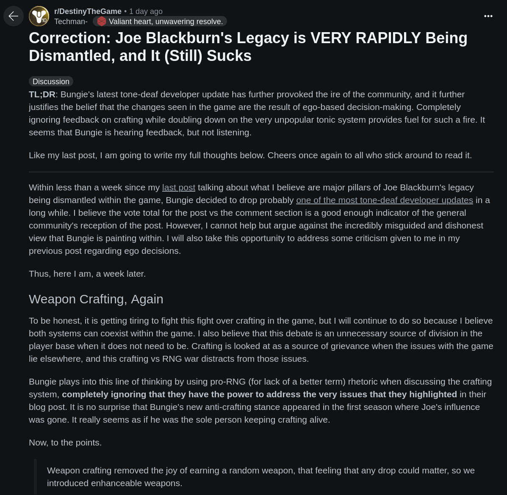

🏆 2025 - the year of the gart cup
january 9th 2025
i know, i know. the moment you've all been waiting for, is finally here. real gartcup
information!!! after a quick poll for the community summit, the games have been decided,
as well as the introduction of a new award. the games are as follows:
- Lethal Company
- Black Ops 3 Zombies
- Halo MCC
- Left 4 Dead 2
- Doors
- Destiny 2
- League of Legends
- Deep Rock Galactic
- Call of Duty: Ghosts - Extinction
- Apex Legends
- Counter-Strike 2
- Phasmophobia
and announcing the new award: the virgin of the year! this award is completely
community nominated, and will be awarded to the person who is the biggest virgin.
the winner will be revealed during the quiz.
the format of the cup has been altered (AGAIN). previously, you could choose between two games
in a single bracket and complete the challenged associated; however, i feel that this creates
an unfair advantage, as the games are not equal in terms of difficulty, and there may be
some players that are extremely experienced in one game, and not the others.
to combat this, to qualify, you MUST complete at least 6/12 of the following challenges in their
respective games, HOWEVER, you are not limited to only 6, you may complete as many as you want, and some challenges do not have their points capped. these challenges are as follows:
Lethal Company
- Objective: Complete one set of quota as fast as possible solo.
- Scoring: Points awarded based on speed and amount of scrap over quota, capped at 100 points.
- Notes: You must use the gartcup modpack when completing this challenge [01944872-2f93-e401-db83-29e5104fcd71].
Black Ops 3 Zombies
- Objective: Reach round 20 on the workshop map Sky Temple with the Wonder Weapon Pack mod enabled.
- Scoring: 75 points for reaching round 20, plus 5 additional points for every round after that, no point cap.
Halo MCC
- Objective: Survive a Legendary Firefight.
- Scoring: 1 point per minute.
- Notes: No point cap.
Left 4 Dead 2
- Objective: Complete the campaign Dead Center on Expert difficulty with Realism mode enabled.
- Scoring: 75 points for completing the campaign, +5 points for each teammate alive at the finale, and +5 bonus points for no incapacitations. Points capped at 100 total.
- Notes: Can be completed solo or as a team. Use the official map only, no mods affecting gameplay mechanics.
Doors
- Objective: Reach door 50.
- Scoring: 50 points for reaching door 50, plus 1 point for each door after. Once door 100 is reached, award 2 points for each door. Points capped at 300 points.
Destiny 2
- Objective: Carry an LFG through Shattered Throne.
- Scoring: 75 points upon completion, plus 25 points if completed in under 45 minutes.
- Notes: Can be completed as a team (team can include Gart).
League of Legends
- Objective: Win a Summoner’s Rift game in quickplay or draft pick.
- Scoring: 40 points for winning the game, +10 points for achieving an S or S+ grade, and +5 points for each kill or assist, capped at 100 points total.
- Notes: Can be completed solo or with a premade team, but only your performance counts toward the score. You must not use a smurf.
Deep Rock Galactic
- Objective: Complete a mission at the chosen hazard level.
- Scoring:
- Hazard level 1 = 10 points
- Hazard level 2 = 20 points
- Hazard level 3 = 30 points
- Hazard level 4 = 50 points
- Hazard level 5 = 100 points
- Notes: Can be done solo or in a group, including random matchmade teammates. Capped at 200 points.
Call of Duty: Ghosts - Extinction
- Objective: Complete a map on the chosen difficulty level.
- Scoring:
- Normal = 40 points
- Hard = 100 points
- Notes: Hard mode is extremely challenging without highly optimized loadouts. Capped at 100 points.
Apex Legends
- Objective: Earn kills and wins in a Battle Royale match.
- Scoring:
- 1 kill = 10 points
- Win = 50 points
- Notes: Scoring is uncapped.
Counter-Strike 2
- Objective: Earn kills and win competitive matches.
- Scoring:
- Kill = 5 points
- Win = 20 points
- Notes: Most points will come from kills, so the balance reflects this. Capped at 100 points.
Phasmophobia
- Objective: Identify the ghost and gather evidence.
- Scoring:
- Correct ghost type guess = 30 points
- Picture of the ghost = 20 points
- Notes: If one player achieves the objective (e.g., guessing or photographing the ghost), points are awarded to all players to maintain a collaborative, scary atmosphere. Scoring is uncapped.
the last part of the cup will be the 20 question quiz, no further details at this time.
Incentives
- Trophies will be awarded to the first, second, and third place winners in the tournament. Trophies TBD.
gartcup begins on the 10th of january, and will end on the 31st of january. the quiz will follow shortly after that date, at which point the awards ceremony will be
held at the end.
📰 an open letter to Tyson
Green
december 16th 2024
dear Tyson Green, i am writing to you today to express my concerns about the future you have planned for Destiny 2.
you have only been leading the helm for a short while (i have to assume at least since The Final Shape launched),
and yet, in this time, you have done nothing but dissapoint. every single turn you make is the wrong one; would it be
so bad to listen to the sav-nav once in a while?

the top-page post in the destiny subreddit yesterday
this year in Destiny should have been a victory lap, a way to very easily win back everyone that had left, and yet somehow
you have managed to make it worse. player counts are at their lowest, and player morale decreases by the second. this game
is not that difficult to direct. even i could do it! in fact, here is every step i would have taken this year to progress the
game forwards, and to cement Joe Blackburn's legacy.
2024: the victory lap
to begin with, i would address the story post Final Shape. the current model of self contained stories is awful,
and it makes no sense. we know that the villain of the season is either going to die or just dissappear anyway,
so why not have taken this year to start subtly building up to the next big bad? the darkness is still somewhat outthere,
and we know that there is someone bigger than The Witness (he says at some point during The Final Shape that he is 'the First Knife of the darkness'),
so why not lead up to the next big release in Frontiers? instead of this cookie cutter bullshit we have now.
 screenshot taken of the tonics screen
screenshot taken of the tonics screen
next, i would address the loot grind. weapon crafting is not the evil you perceive it to be Tyson. it is a way to
keep players engaged, and to keep them playing. the current model of 'play the game for 12 weeks, then leave for 12 weeks'
is not sustainable, especically since you have cut the amount of endgame content in half AND you have removed the ability
to focus for red-border weapons (of the season that is currently active). to re-iterate for those that do not know, you cannot
receive or focus red-border weapons from the season that is currently active, which means you cannot add the crafting pattern
for the weapon to your collection. you must farm for the specific roll that you want, except the current method of farming is
the absolute worst it has ever been. you can use a 'tonic' to focus your weapon drops to a smaller pool, but it does not guarantee
a drop to occur, nor does it allow you to focus for the weapon you want. the way forward that i see, is to take a page out of the
menagerie's book, and introduce pure weapon focusing, maybe not exactly as it was back then, but similar. oh and it also only
works in seasonal activities. just make the focusing for strikes, gambit and crucible loot cheaper man. none of the loot in those activities
is worth the cost. wake up.
the idea is simple: 5 different slots in the 'chalice', each serving a different purpose and using a different (get ready for
the real kicker) and very EASILY FARMABLE currencies. the first slot is for the weapon archetype, the second slot is for the weapon slot,
the third slot is for the specifc weapon. the fourth and fifth slots would be to enable double perks in the 3rd and 4th perk slots, but the materials
required for these slots would be earned from endgame activities (dungeon/raid encounters, trials, GMs, etc.). and even more importantly,
you can still earn red-borders towards patterns, to mitigate the grind. this not only encourages player agency, but it respects their time,
something you have personally failed to do Tyson.
another pain point is related to loot in dungeons and legacy raids. there needs to be a way to receive a guaranteed red-border weapon at the end of every
dungeon and raid, and there also needs to be the same focusing chest that is at the end of raids in dungeons.
finally, i would reintoduce hard mode raids, with cosmetic rewards as incentive. the idea that hard mode raids are not worth
the development cost as the amount of players that complete them is not high enough to justify their existance, is an outdated
mindset. the pantheon event proves this. the pantheon event even proves that hard mode encounters can be created, as the team at Bungie
has shown they are creative enough to change the encounters in meaningful ways! hard mode raids also incentivise players to chase
powerful loot with the best perk combos, as it is an environment where you must be at your absolute strongest to succeed, and the cosmetic
reward incentive is a way to show off to everyone else. I MEAN COME ON, IT IS LITERALLY THAT EASY TYSON.
Tyson, please, do not continue to cover your ears and eyes and wake up to reality. it's never to late to change, but if you don't do
it now, you might not get another chance.
from, gart